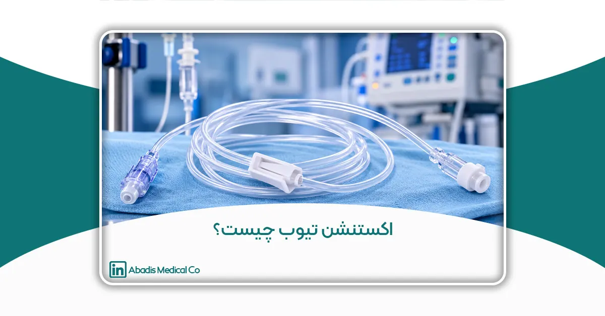
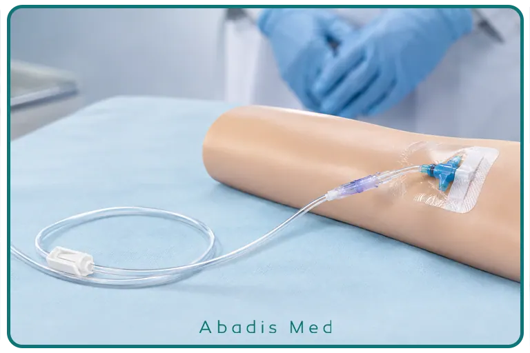

اکستنشن تیوب (Extension Tube) چیست؟ راهنمای کامل کاربردها، انواع و ویژگیها
مقدمه
در بسیاری از فرآیندهای درمانی، تنها وجود یک کاتتر، آنژیوکت یا سرنگ برای انتقال ایمن مایعات و داروها کافی نیست. در بسیاری از شرایط بالینی، لازم است بین بیمار و تجهیزات پزشکی یک مسیر ارتباطی انعطافپذیر، ایمن و مطمئن ایجاد شود تا تزریق دارو، انتقال محلولها یا نمونهگیری بدون ایجاد فشار اضافی بر محل ورود کاتتر انجام گیرد.
یکی از تجهیزات پرکاربردی که دقیقاً برای این منظور طراحی شده است، اکستنشن تیوب (Extension Tube) است. این وسیله اگرچه از نظر ظاهری قطعهای ساده به نظر میرسد، اما نقش مهمی در افزایش ایمنی بیمار، کاهش خطر جابهجایی کاتتر، تسهیل انجام اقدامات درمانی و بهبود عملکرد کادر درمان دارد.
امروزه اکستنشن تیوب در بخشهای مختلف بیمارستان از جمله اتاق عمل، بخشهای مراقبت ویژه (ICU و CCU)، اورژانس، دیالیز، آنژیوگرافی، شیمیدرمانی، اتاقهای بستری و حتی مراقبتهای خانگی بهطور گسترده مورد استفاده قرار میگیرد.
پیشرفت فناوری تجهیزات پزشکی نیز باعث شده است که امروزه انواع مختلفی از اکستنشن تیوبها با طولهای متفاوت، قطرهای گوناگون، شیرهای کنترل جریان، کانکتورهای ایمن و قابلیت تحمل فشار بالا تولید شوند تا پاسخگوی نیازهای متنوع مراکز درمانی باشند.
در این مقاله، با اکستنشن تیوب، ساختار، نحوه عملکرد، انواع، کاربردها، ویژگیهای یک محصول استاندارد و نکات مهم در انتخاب این تجهیز پزشکی آشنا خواهیم شد
اکستنشن تیوب (Extension Tube) چیست؟
اکستنشن تیوب (Extension Tube) یک لوله پزشکی استریل و انعطافپذیر است که بهعنوان یک رابط بین تجهیزات تزریق و مسیر دسترسی عروقی یا سایر کاتترهای پزشکی استفاده میشود. این وسیله با ایجاد یک مسیر انتقال اضافی، امکان تزریق دارو، انتقال مایعات، نمونهگیری یا اتصال تجهیزات مختلف را بدون وارد شدن فشار مستقیم به محل ورود کاتتر فراهم میکند.
اکستنشن تیوب معمولاً از پلیمرهای پزشکی شفاف و زیستسازگار ساخته میشود و در دو انتهای خود دارای کانکتورهای استاندارد Luer یا Luer Lock است تا بتوان آن را به انواع سرنگ، ست سرم، آنژیوکت، کاتترهای ورید مرکزی (CVC)، کاتترهای شریانی و سایر تجهیزات پزشکی متصل کرد.
بسته به نوع کاربرد، برخی مدلهای اکستنشن تیوب به شیرهای یکطرفه (Check Valve)، شیر سهراهی (Three-way Stopcock)، کانکتورهای بدون سوزن (Needle-free Connector) یا گیره کنترل جریان (Clamp) نیز مجهز هستند که ایمنی و سهولت استفاده را افزایش میدهند.
با وجود طراحی ساده، این تجهیز نقش مهمی در کاهش آسیب به محل ورود کاتتر، افزایش راحتی بیمار و تسهیل اقدامات درمانی ایفا میکند.
اکستنشن تیوب چگونه کار میکند؟
عملکرد اکستنشن تیوب بر پایه ایجاد یک مسیر انتقال مطمئن میان بیمار و تجهیزات تزریق است.
در شرایط عادی، سرنگ یا ست سرم مستقیماً به آنژیوکت یا کاتتر متصل میشود. در این حالت، هر بار اتصال یا جدا کردن تجهیزات، فشار مکانیکی به محل ورود کاتتر وارد میشود که ممکن است باعث جابهجایی، درد بیمار یا حتی خارج شدن کاتتر شود.
اکستنشن تیوب این مشکل را برطرف میکند. با اضافه شدن چند سانتیمتر مسیر انعطافپذیر، تجهیزات تزریق در فاصلهای مناسب از بدن بیمار قرار میگیرند و تمامی اقدامات درمانی از طریق این رابط انجام میشود.
به این ترتیب، حرکت بیمار یا جابهجایی تجهیزات، فشار بسیار کمتری به محل ورود کاتتر وارد میکند و احتمال بروز عوارض کاهش مییابد.
در بسیاری از مراکز درمانی، استفاده از اکستنشن تیوب بهعنوان بخشی از استاندارد مراقبت از مسیرهای وریدی شناخته میشود، بهویژه در بیمارانی که به تزریقهای مکرر یا درمان طولانیمدت نیاز دارند.

اجزای اصلی اکستنشن تیوب
اگرچه طراحی اکستنشن تیوب ساده به نظر میرسد، اما هر بخش آن برای حفظ ایمنی و عملکرد صحیح سیستم اهمیت دارد.
۱. لوله انعطافپذیر (Tubing)
بخش اصلی اکستنشن تیوب، لولهای شفاف و انعطافپذیر است که وظیفه انتقال مایعات یا دارو را بر عهده دارد.
این لوله معمولاً از PVC پزشکی یا سایر پلیمرهای زیستسازگار ساخته میشود و باید ویژگیهای زیر را داشته باشد:
- انعطافپذیری مناسب
- مقاومت در برابر خمشدگی (Kinking)
- شفافیت بالا برای مشاهده جریان مایع
- مقاومت در برابر فشار تزریق
- عدم واکنش با داروها و محلولهای تزریقی
۲. کانکتور Luer Lock
در بیشتر مدلهای استاندارد، دو سر اکستنشن تیوب به کانکتورهای Luer Lock مجهز هستند.
مزایای این نوع اتصال عبارتاند از:
- اتصال ایمنتر
- کاهش احتمال جدا شدن ناخواسته
- جلوگیری از نشت مایعات
- سازگاری با اکثر تجهیزات پزشکی
به همین دلیل، امروزه کانکتورهای Luer Lock به یکی از رایجترین استانداردهای اتصال در تجهیزات تزریق تبدیل شدهاند.
۳. گیره کنترل جریان (Clamp)
بسیاری از اکستنشن تیوبها دارای یک گیره پلاستیکی هستند که امکان قطع یا باز کردن جریان مایع را فراهم میکند.
وجود این قطعه باعث میشود:
- هنگام تعویض سرنگ یا ست، از نشت مایعات جلوگیری شود.
- خطر ورود هوا به سیستم کاهش یابد.
- کنترل بیشتری بر فرآیند تزریق وجود داشته باشد.
۴. شیرهای جانبی (در برخی مدلها)
در برخی کاربردهای تخصصی، اکستنشن تیوب ممکن است به تجهیزات زیر مجهز باشد:
- شیر سهراهی (Three-way Stopcock)
- شیر یکطرفه (Check Valve)
- Needle-free Connector
- Injection Port
این تجهیزات امکان تزریق همزمان چند دارو، نمونهگیری یا اتصال تجهیزات مختلف را بدون نیاز به جدا کردن مسیر اصلی فراهم میکنند.
چرا استفاده از اکستنشن تیوب اهمیت دارد؟
اگرچه ممکن است اکستنشن تیوب قطعهای ساده به نظر برسد، اما استفاده از آن مزایای متعددی برای بیمار، کادر درمان و حتی تجهیزات پزشکی به همراه دارد.
مهمترین دلایل استفاده از اکستنشن تیوب عبارتاند از:
کاهش فشار بر محل ورود کاتتر
یکی از مهمترین مزایای اکستنشن تیوب، کاهش کشش و فشار مکانیکی بر محل ورود آنژیوکت یا کاتتر است. این موضوع احتمال جابهجایی یا خارج شدن کاتتر را کاهش داده و موجب افزایش راحتی بیمار میشود.
افزایش ایمنی بیمار
با ایجاد فاصله بین محل ورود کاتتر و تجهیزات تزریق، خطر آسیب به رگ، نشت دارو به بافت اطراف (Infiltration) و سایر عوارض ناشی از حرکت تجهیزات کاهش مییابد.
تسهیل انجام اقدامات درمانی
وجود اکستنشن تیوب باعث میشود کادر درمان بتوانند تزریق دارو، شستوشوی کاتتر (Flushing)، نمونهگیری یا تعویض سرنگ را با سهولت بیشتری انجام دهند، بدون اینکه نیاز به دستکاری مستقیم محل ورود کاتتر باشد.
کاهش خطر آلودگی
در بسیاری از مدلهای مدرن، استفاده از کانکتورهای ایمن و سیستمهای بسته میتواند تعداد دفعات تماس مستقیم با مسیر وریدی را کاهش داده و به اجرای بهتر اصول کنترل عفونت کمک کند.
افزایش راحتی بیمار
بیمارانی که برای مدت طولانی تحت درمان قرار دارند، با استفاده از اکستنشن تیوب آزادی حرکت بیشتری خواهند داشت و انجام اقدامات درمانی نیز با ناراحتی کمتری همراه خواهد بود.
کاربردهای اکستنشن تیوب در پزشکی
اکستنشن تیوب یکی از پرکاربردترین تجهیزات مصرفی پزشکی است که تقریباً در تمامی بخشهای بیمارستان و بسیاری از مراکز درمانی مورد استفاده قرار میگیرد. انعطافپذیری بالا، سهولت اتصال و افزایش ایمنی در تزریق باعث شده است این وسیله به یکی از اجزای ثابت بسیاری از فرآیندهای درمانی تبدیل شود.
بسته به شرایط بیمار و نوع درمان، اکستنشن تیوب میتواند کاربردهای متفاوتی داشته باشد.
۱. درمانهای داخل وریدی (Intravenous Therapy)
رایجترین کاربرد اکستنشن تیوب در تزریق انواع محلولها، سرمها و داروهای وریدی است.
در این شرایط، اکستنشن تیوب فاصله مناسبی بین بیمار و تجهیزات تزریق ایجاد میکند و باعث میشود اتصال و جداسازی سرنگ یا ست سرم بدون وارد شدن فشار مستقیم به آنژیوکت انجام شود.
این موضوع علاوه بر افزایش راحتی بیمار، احتمال جابهجایی کاتتر را نیز کاهش میدهد.
۲. تزریق داروهای مکرر
بیمارانی که در طول شبانهروز نیاز به تزریقهای متعدد دارند، معمولاً از اکستنشن تیوب بهره میبرند.
این وسیله امکان تزریق مکرر دارو را بدون دستکاری مداوم محل ورود کاتتر فراهم میکند و در نتیجه احتمال التهاب، درد و آسیب به رگ کاهش مییابد.
۳. بخشهای مراقبت ویژه (ICU و CCU)
در بخشهای مراقبت ویژه، بیماران معمولاً به چندین مسیر وریدی، داروهای انفوزیونی و تجهیزات پایش متصل هستند.
در چنین شرایطی، اکستنشن تیوب باعث میشود:
- دسترسی به مسیرهای تزریق آسانتر شود.
- فضای کاری کادر درمان افزایش یابد.
- احتمال کشیده شدن کاتترها کاهش پیدا کند.
- مدیریت خطوط تزریق با نظم بیشتری انجام شود.
۴. اتاق عمل
در طول جراحی، بیمار معمولاً تحت بیهوشی قرار دارد و تیم جراحی باید در هر لحظه امکان تزریق سریع داروها یا مایعات را داشته باشد.
اکستنشن تیوب به متخصص بیهوشی این امکان را میدهد که بدون ایجاد مزاحمت برای میدان جراحی، داروها را با ایمنی بیشتری تزریق کند.
همچنین هنگام تغییر وضعیت بیمار روی تخت جراحی، خطر وارد شدن فشار به محل کاتتر کاهش مییابد.
۵. تصویربرداری و آنژیوگرافی
در بخشهای آنژیوگرافی، سیتی اسکن، MRI و سایر روشهای تصویربرداری، گاهی لازم است تزریق ماده حاجب از فاصله مناسب انجام شود.
برای این منظور از اکستنشن تیوبهای فشار بالا (High Pressure Extension Tubes) استفاده میشود که توان تحمل فشار زیاد تزریق توسط انژکتورهای اتوماتیک را دارند.
۶. دیالیز
در برخی روشهای دیالیز نیز از اکستنشن تیوب برای ایجاد اتصالات مطمئن میان کاتترها و تجهیزات دیالیز استفاده میشود.
در این شرایط، کیفیت اتصالات و مقاومت تیوب اهمیت بسیار زیادی دارد.
۷. شیمیدرمانی
بیماران مبتلا به سرطان که تحت درمان با داروهای شیمیدرمانی قرار میگیرند، معمولاً به تزریقهای طولانیمدت نیاز دارند.
اکستنشن تیوب باعث میشود:
- دفعات دستکاری کاتتر کاهش یابد.
- تزریق داروها با ایمنی بیشتری انجام شود.
- بیمار راحتتر حرکت کند.
- احتمال آسیب به مسیر وریدی کاهش پیدا کند.
انواع اکستنشن تیوب
اکستنشن تیوبها بر اساس طول، فشار قابل تحمل، نوع اتصال و کاربرد بالینی در مدلهای مختلفی تولید میشوند.
انتخاب نوع مناسب باید بر اساس نیاز درمانی، نظر پزشک و مشخصات فنی محصول انجام شود.
از نظر طول
اکستنشن تیوبها در طولهای مختلف تولید میشوند.
از رایجترین اندازهها میتوان به موارد زیر اشاره کرد:
- 10 سانتیمتر
- 20 سانتیمتر
- 30 سانتیمتر
- 50 سانتیمتر
- 75 سانتیمتر
- 100 سانتیمتر و بیشتر
انتخاب طول مناسب به محل قرارگیری بیمار، نوع درمان و فضای موردنیاز بستگی دارد.
از نظر تحمل فشار
اکستنشن تیوب معمولی (Standard Extension Tube)
این مدل برای تزریقهای معمول و انفوزیون سرم طراحی شده است و در بیشتر بخشهای بیمارستان کاربرد دارد.
اکستنشن تیوب فشار بالا (High Pressure Extension Tube)
این نوع برای تحمل فشارهای بسیار زیاد طراحی شده است و در مواردی مانند:
- تزریق ماده حاجب
- سیتی آنژیوگرافی
- MRI
- آنژیوگرافی
- انژکتورهای اتوماتیک
استفاده میشود.
این تیوبها معمولاً دارای مشخصات فشار مجاز (Pressure Rating) هستند که توسط تولیدکننده اعلام میشود.
از نظر نوع اتصال
اکستنشن تیوبها ممکن است دارای انواع مختلفی از اتصالات باشند، از جمله:
- Luer Slip
- Luer Lock
- Needle-free Connector
- Three-way Stopcock
- Y Connector
در میان این مدلها، Luer Lock به دلیل اتصال ایمنتر، بیشترین کاربرد را در مراکز درمانی دارد.
از نظر تجهیزات جانبی
برخی اکستنشن تیوبها به تجهیزات اضافه مجهز هستند، مانند:
- گیره کنترل جریان (Clamp)
- شیر یکطرفه (Check Valve)
- پورت تزریق (Injection Port)
- فیلتر
- شیر سهراهی
وجود این تجهیزات باعث میشود اکستنشن تیوب برای کاربردهای تخصصیتر مناسب باشد.
تفاوت اکستنشن تیوب معمولی و فشار بالا
یکی از سؤالات رایج هنگام انتخاب این محصول، تفاوت میان اکستنشن تیوب معمولی و مدلهای High Pressure است.
اگرچه این دو محصول از نظر ظاهری شباهت زیادی دارند، اما از نظر طراحی، جنس مواد اولیه و مقاومت مکانیکی تفاوتهای مهمی با یکدیگر دارند.
اکستنشن تیوب معمولی برای انتقال سرم، دارو و محلولهای تزریقی با فشارهای متعارف طراحی شده است، در حالی که مدلهای فشار بالا قادرند فشارهای بسیار بیشتری را که توسط انژکتورهای خودکار ایجاد میشود تحمل کنند.
به همین دلیل، استفاده از اکستنشن تیوب معمولی برای تزریق ماده حاجب با دستگاههای فشار بالا توصیه نمیشود؛ زیرا ممکن است باعث نشت، پارگی یا آسیب به سیستم تزریق شود.
در مقابل، اکستنشن تیوبهای فشار بالا معمولاً با استفاده از مواد مقاومتر تولید شده و قبل از عرضه، تحت آزمونهای فشار قرار میگیرند تا ایمنی آنها در کاربردهای تخصصی تضمین شود.
ویژگیهای یک اکستنشن تیوب استاندارد
اکستنشن تیوب اگرچه یکی از تجهیزات مصرفی پزشکی محسوب میشود، اما کیفیت ساخت آن تأثیر مستقیمی بر ایمنی بیمار، عملکرد سیستم تزریق و کاهش خطر بروز عوارض دارد. به همین دلیل، هنگام انتخاب این محصول باید علاوه بر قیمت، به مشخصات فنی و استانداردهای تولید آن نیز توجه شود.
یک اکستنشن تیوب استاندارد معمولاً دارای ویژگیهای زیر است.
۱. استفاده از مواد اولیه Medical Grade
مهمترین ویژگی یک اکستنشن تیوب باکیفیت، استفاده از پلیمرهای پزشکی زیستسازگار (Medical Grade) است.
این مواد باید دارای ویژگیهای زیر باشند:
- فاقد مواد سمی و لاتکس باشند.
- با داروها و محلولهای تزریقی واکنش ندهند.
- شفافیت مناسبی برای مشاهده جریان مایع داشته باشند.
- در برابر ترکخوردگی و تغییر شکل مقاوم باشند.
استفاده از مواد اولیه باکیفیت، علاوه بر افزایش طول عمر محصول، ایمنی بیمار را نیز تضمین میکند.
۲. شفافیت مناسب لوله
شفاف بودن بدنه اکستنشن تیوب به کادر درمان اجازه میدهد تا بهراحتی موارد زیر را مشاهده کنند:
- جریان مایع
- وجود حباب هوا
- تشکیل لخته
- انسداد مسیر
- برگشت خون (Blood Reflux)
این موضوع در بسیاری از اقدامات درمانی اهمیت بالایی دارد و به تشخیص سریع مشکلات احتمالی کمک میکند.
۳. مقاومت در برابر خمشدگی (Anti-Kink Design)
خم شدن یا پیچ خوردن لوله میتواند جریان مایع را مختل کرده و باعث کاهش دقت در تزریق دارو شود.
به همین دلیل، اکستنشن تیوبهای استاندارد به گونهای طراحی میشوند که در برابر خمشدگی، پیچخوردگی و فشارهای معمول مقاوم باشند.
۴. اتصالات ایمن
کیفیت کانکتورها یکی از مهمترین عوامل در عملکرد صحیح اکستنشن تیوب است.
اتصالات باید به گونهای طراحی شوند که:
- احتمال جدا شدن ناخواسته به حداقل برسد.
- از نشت مایعات جلوگیری شود.
- اتصال آسان و مطمئنی با سایر تجهیزات پزشکی ایجاد کنند.
به همین دلیل، امروزه اکثر محصولات استاندارد از کانکتورهای Luer Lock استفاده میکنند.
۵. تحمل فشار مناسب
در کاربردهای تخصصی مانند آنژیوگرافی یا تزریق ماده حاجب، اکستنشن تیوب باید توان تحمل فشارهای بالا را داشته باشد.
محصولات استاندارد معمولاً فشار قابل تحمل (Pressure Rating) خود را روی بستهبندی یا بدنه محصول درج میکنند.
۶. استریل بودن محصول
اکستنشن تیوبها معمولاً بهصورت استریل و یکبارمصرف عرضه میشوند.
استریل بودن محصول احتمال انتقال آلودگی را کاهش داده و از بروز عفونتهای مرتبط با تجهیزات پزشکی جلوگیری میکند.
به همین دلیل، بستهبندی محصول باید سالم، بدون آسیب و دارای تاریخ انقضای معتبر باشد.
نقش اکستنشن تیوب در کنترل عفونت
کنترل عفونت یکی از مهمترین اولویتهای مراکز درمانی است و تجهیزات پزشکی مصرفی نیز نقش مهمی در این فرآیند دارند.
اگرچه اکستنشن تیوب بهتنهایی از انتقال عوامل بیماریزا جلوگیری نمیکند، اما طراحی مناسب آن میتواند خطر آلودگی را به میزان قابلتوجهی کاهش دهد.
از جمله مهمترین مزایای استفاده از اکستنشن تیوب در برنامههای کنترل عفونت میتوان به موارد زیر اشاره کرد:
کاهش دستکاری محل ورود کاتتر
هر بار اتصال یا جدا کردن سرنگ و ست سرم، احتمال انتقال آلودگی افزایش مییابد.
وجود اکستنشن تیوب باعث میشود تعداد دفعات تماس مستقیم با محل ورود کاتتر کاهش پیدا کند.
کاهش خطر آلودگی مسیر وریدی
در بسیاری از مدلهای جدید، استفاده از کانکتورهای ایمن و سیستمهای بسته موجب میشود احتمال ورود میکروارگانیسمها به مسیر تزریق کاهش یابد.
کاهش تماس کارکنان با خون و مایعات بدن
در برخی اقدامات درمانی، وجود اکستنشن تیوب امکان انجام تزریق یا نمونهگیری را از فاصله مناسب فراهم میکند و احتمال تماس مستقیم کارکنان با خون یا ترشحات بیمار را کاهش میدهد.
کمک به رعایت پروتکلهای ایمنی
استفاده از تجهیزات استاندارد، در کنار رعایت بهداشت دست، ضدعفونی کانکتورها و استفاده از تجهیزات حفاظت فردی (PPE)، بخشی از برنامه جامع کنترل عفونت در مراکز درمانی محسوب میشود.
اشتباهات رایج هنگام استفاده از اکستنشن تیوب
حتی باکیفیتترین تجهیزات نیز در صورت استفاده نادرست میتوانند باعث ایجاد مشکل شوند.
از جمله رایجترین خطاها میتوان به موارد زیر اشاره کرد:
- استفاده از اکستنشن تیوب فشار معمولی برای تزریقهای فشار بالا
- باز و بسته کردن مکرر اتصالات بدون رعایت اصول استریل
- باقی ماندن حباب هوا در داخل لوله
- خم شدن یا پیچ خوردن تیوب
- استفاده مجدد از محصولات یکبارمصرف
- اتصال نامناسب کانکتورها
- عدم بررسی سلامت بستهبندی پیش از مصرف
- استفاده از محصول پس از تاریخ انقضا
آموزش صحیح کارکنان درمانی و رعایت دستورالعملهای تولیدکننده میتواند احتمال بروز این خطاها را به میزان قابلتوجهی کاهش دهد.
فناوریهای جدید در طراحی اکستنشن تیوب
در سالهای اخیر، تولیدکنندگان تجهیزات پزشکی با هدف افزایش ایمنی، راحتی کاربری و کاهش خطر عفونت، تغییرات قابلتوجهی در طراحی اکستنشن تیوبها ایجاد کردهاند.
برخی از مهمترین نوآوریهای این حوزه عبارتاند از:
- کانکتورهای بدون سوزن (Needle-free Connectors): کاهش خطر آسیب ناشی از سوزن و کاهش احتمال آلودگی مسیر تزریق.
- شیرهای یکطرفه (Check Valves): جلوگیری از برگشت خون و مایعات در مسیر تزریق.
- اکستنشن تیوبهای مقاوم در برابر فشار بالا: مناسب برای استفاده با انژکتورهای اتوماتیک و تزریق ماده حاجب.
- پوششهای مقاوم در برابر خمشدگی: حفظ جریان یکنواخت مایعات حتی در شرایطی که لوله تحت فشار یا خمشدگی قرار میگیرد.
- سیستمهای بسته (Closed System): کاهش تماس مستقیم با مسیر وریدی و کمک به کنترل عفونت.
این پیشرفتها موجب شدهاند اکستنشن تیوبهای مدرن علاوه بر عملکرد بهتر، ایمنی بیشتری برای بیماران و کادر درمان فراهم کنند.
چگونه یک اکستنشن تیوب مناسب انتخاب کنیم؟
انتخاب اکستنشن تیوب مناسب باید بر اساس نوع درمان، شرایط بیمار و الزامات فنی مرکز درمانی انجام شود. هنگام خرید این محصول، بهتر است به موارد زیر توجه شود:
- استفاده از مواد اولیه پزشکی باکیفیت (Medical Grade)
- شفافیت مناسب برای مشاهده جریان مایعات
- مقاومت در برابر خمشدگی و پیچخوردگی
- اتصالات استاندارد و ایمن (ترجیحاً Luer Lock)
- فشار قابل تحمل متناسب با کاربرد موردنظر
- استریل و یکبارمصرف بودن محصول
- سازگاری با سایر تجهیزات پزشکی
- تولید مطابق استانداردهای بینالمللی تجهیزات پزشکی
- بستهبندی مناسب و دارای قابلیت ردیابی محصول
انتخاب یک محصول استاندارد علاوه بر افزایش ایمنی بیمار، موجب کاهش خطاهای درمانی، بهبود عملکرد کادر درمان و افزایش کیفیت خدمات درمانی خواهد شد.
آینده اکستنشن تیوبها در تجهیزات پزشکی
با پیشرفت فناوری در صنعت تجهیزات پزشکی، طراحی اکستنشن تیوبها نیز به سمت افزایش ایمنی، بهبود عملکرد و کاهش خطر عفونت پیش میرود. امروزه بسیاری از شرکتهای تولیدکننده در حال توسعه محصولاتی هستند که علاوه بر انتقال ایمن مایعات، بتوانند نیازهای روزافزون مراکز درمانی مدرن را نیز پاسخ دهند.
یکی از مهمترین روندهای توسعه، استفاده از سیستمهای بسته (Closed IV Systems) است که با کاهش تعداد دفعات باز و بسته شدن مسیر تزریق، احتمال ورود میکروارگانیسمها را به حداقل میرسانند. این سیستمها بهویژه در بخشهای مراقبت ویژه، شیمیدرمانی و درمان بیماران با نقص سیستم ایمنی اهمیت زیادی پیدا کردهاند.
از سوی دیگر، استفاده از کانکتورهای بدون سوزن (Needle-free Connectors) نیز رو به افزایش است. این فناوری علاوه بر کاهش خطر آسیب ناشی از سوزن برای کارکنان درمانی، به کاهش آلودگی مسیر تزریق و افزایش ایمنی بیماران کمک میکند.
در برخی مدلهای جدید، اکستنشن تیوبها به شیرهای ضدبرگشت (Anti-Reflux Valves) مجهز شدهاند که از بازگشت خون یا محلولهای تزریقی جلوگیری کرده و پایداری جریان را حفظ میکنند.
همچنین تولیدکنندگان در حال توسعه پلیمرهای پیشرفتهتری هستند که علاوه بر شفافیت بیشتر، مقاومت بالاتری در برابر فشار، خمشدگی و تغییرات دمایی داشته باشند. این ویژگیها باعث افزایش طول عمر محصول و کاهش احتمال بروز خطاهای درمانی میشود.
با توجه به روند رو به رشد درمانهای کمتهاجمی، مراقبتهای خانگی و استفاده از پمپهای تزریق هوشمند، انتظار میرود در آینده اکستنشن تیوبها با قابلیتهای جدید و طراحیهای تخصصیتر تولید شوند تا نیازهای متنوع مراکز درمانی را با دقت بیشتری پوشش دهند.
جمعبندی
اکستنشن تیوب (Extension Tube) یکی از تجهیزات مهم و پرکاربرد در سیستمهای تزریق و انتقال مایعات پزشکی است که با ایجاد یک مسیر ارتباطی ایمن و انعطافپذیر، نقش مهمی در بهبود کیفیت مراقبت از بیماران ایفا میکند.
این تجهیز با کاهش فشار واردشده به محل ورود کاتتر، تسهیل تزریق داروها، افزایش آزادی عمل کادر درمان و کاهش احتمال جابهجایی یا آسیب به مسیر وریدی، به یکی از اجزای ضروری بسیاری از فرآیندهای درمانی تبدیل شده است.
امروزه اکستنشن تیوبها در بخشهای مختلف بیمارستان از جمله اتاق عمل، اورژانس، بخشهای مراقبت ویژه، شیمیدرمانی، دیالیز، آنژیوگرافی و درمانهای داخل وریدی بهطور گسترده مورد استفاده قرار میگیرند و در انواع مختلف با طولها، فشارهای قابل تحمل و تجهیزات جانبی متنوع تولید میشوند.
انتخاب یک اکستنشن تیوب استاندارد، تولیدشده از مواد اولیه Medical Grade، با اتصالات ایمن، مقاومت مناسب در برابر فشار و طراحی سازگار با استانداردهای تجهیزات پزشکی، میتواند علاوه بر افزایش ایمنی بیمار، از بروز خطاهای درمانی و آسیب به تجهیزات جلوگیری کند.
در نهایت، استفاده صحیح از اکستنشن تیوب، رعایت اصول کنترل عفونت، آموزش مستمر کارکنان درمانی و انتخاب محصولات باکیفیت از تولیدکنندگان معتبر، نقش مهمی در ارتقای کیفیت خدمات درمانی و افزایش ایمنی بیماران خواهد داشت.
منابع (References)
- Infusion Nurses Society (INS). Infusion Therapy Standards of Practice.
- Centers for Disease Control and Prevention (CDC). Guidelines for the Prevention of Intravascular Catheter-Related Infections.
- World Health Organization (WHO). WHO Guidelines on the Use of Peripheral Intravenous Catheters.
- ISO 8536 Series. Infusion Equipment for Medical Use.
- ISO 80369 Series. Small-bore Connectors for Liquids and Gases in Healthcare Applications.
- Association for the Advancement of Medical Instrumentation (AAMI). Infusion Therapy and Vascular Access Guidelines.
- European Society of Clinical Microbiology and Infectious Diseases (ESCMID). Guidelines on Catheter-Related Infections.
- PubMed – Peer-reviewed articles on Extension Tubes, Intravenous Therapy, Vascular Access Devices, Needle-free Connectors, and Infusion Safety.